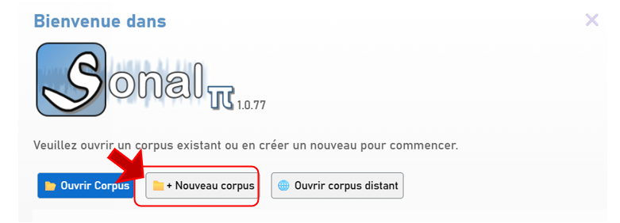
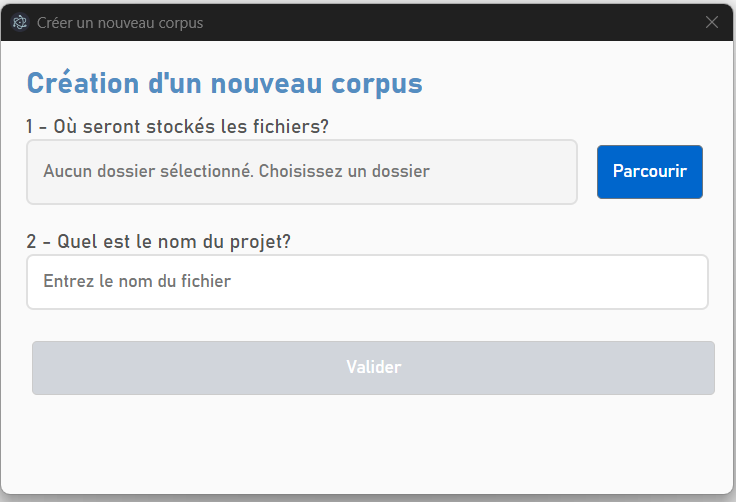
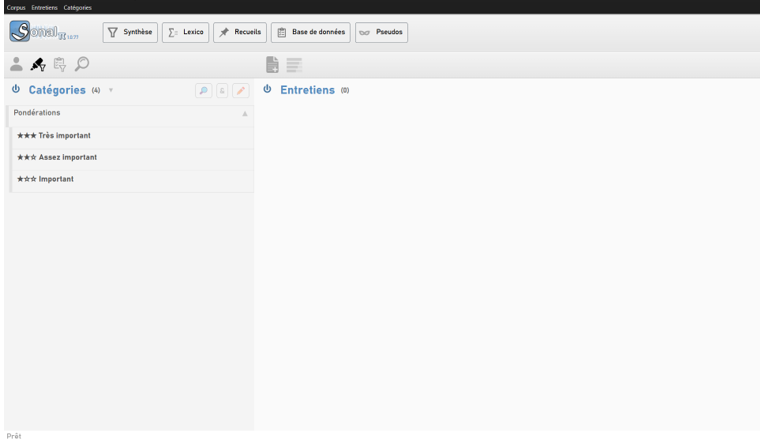
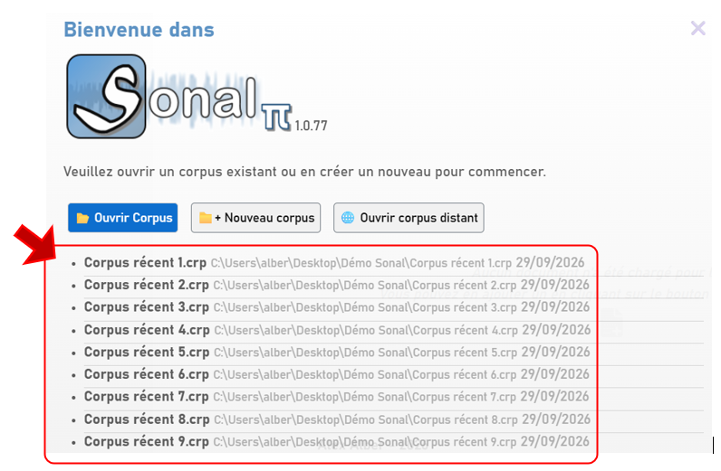
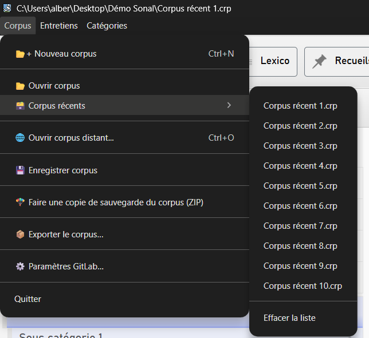
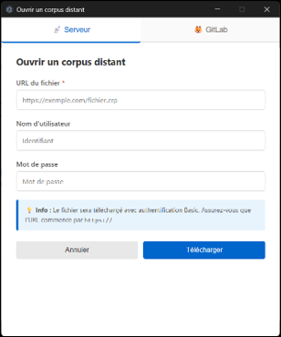

2 - Ouvrir un projet (corpus)
Un corpus est un cadre de travail permettant de soumettre plusieurs fichiers à une grille d'analyse commune. Il centralise les matériaux et toutes les informations que vous ajoutez à leur sujet (grilles de codage thématique, variables, pseudonymisation etc.).
Travailler dans Sonal suppose donc de créer un corpus, même si vous ne souhaitez travailler que sur un entretien.
Dans Sonal, le corpus est stocké dans un fichier dont l'extension est .crp.
Bon à savoir :
Il s'agit d'un fichier structuré au format .json qui contient toutes les informations sur votre projet, dont l'adresse des fichiers de données (son et texte) mais pas les fichiers eux-mêmes. Cela implique que pour sauvegarder un projet, il ne suffit pas de copier ce fichier. Une procédure est prévue (voir sauvegarder un projet). Il ne faut pas déplacer le fichier .crp seul non plus.
2.1 Créer un nouveau projet (corpus)
Au lancement du logiciel, la fenêtre qui apparaît vous propose plusieurs choix. Pour votre première utilisation du logiciel, cliquez sur Créer un nouveau corpus.

Lorsque vous créez un nouveau corpus, Sonal va vous demander deux choses.

2.1.1 Définir un répertoire de travail
La première chose à faire est de définir le répertoire de travail dans lequel vous allez travailler.
2.1.2 Nommer le projet
La deuxième chose est le nom du projet. Sonal créera un fichier .crp à l'endroit où vous allez travailler.
Après validation, vous arrivez dans une fenêtre vierge, qui ne contient encore que les catégories par défaut et aucun entretien.
C'est la fenêtre principale du logiciel, celle qui affiche le projet/corpus.

2.2 Ouvrir un corpus existant
Sonal se souvient des corpus récemment ouverts qui apparaissent dans la liste sous les boutons sur la page d'accueil. Cliquez simplement sur la ligne correspondante pour réouvrir un corpus.

Ils sont également accessibles depuis le menu « Corpus » sur la page principale

2.2.1 Ouvrir un corpus local
Vous pouvez ouvrir un corpus hébergé sur votre ordinateur en cliquant sur « ouvrir corpus ». Une fenêtre de dialogue vous demande alors de pointer vers le fichier .crp correspondant.
2.2.2 Ouvrir un corpus distant
Vous pouvez aussi accéder à un corpus partagé en ligne. Cliquez sur « ouvrir corpus distant ». L'interface vous demande l'adresse, votre identifiant et votre mot de passe.
